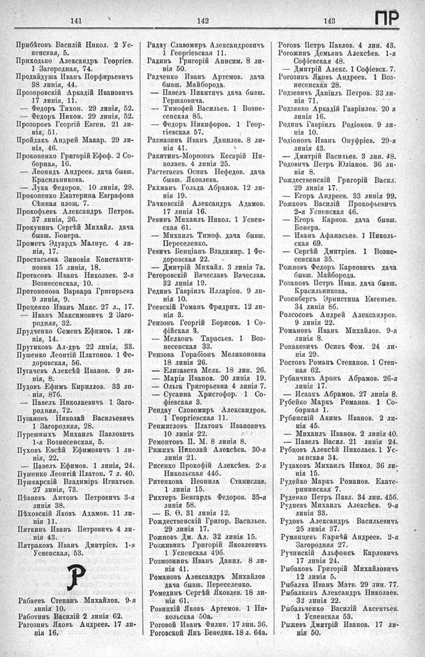

Лист источника 553
Скан

Распознанный текст
141
Прибѣговъ Василій Никол. 2 Ус-
пенская, 5.
Приходько Александръ Георгіев.
1 Загородная, 74.
Продайдуша Иванъ Порфирьевичъ
38 линія, 44.
Прозоровскій Аркадій Ивановичъ
17 линія, 11.
— Федоръ Тихон. 29 линія, 52.
— Федоръ Никон. 29 линія, 52.
Прозоровъ Георгій Евген. 21 ли-
нія, 51.
Пройдакъ Андрей Макар. 29 ли-
нія, 46.
Прокопенко Григорій Ефоф. 2 Со-
борная, 16.
— Леонидъ Андреев. дача бывш.
Красильникова.
— Лука Федоров. 10 линія, 28.
Прокопенко Екатерина Евграфова
Сѣнная площ. 7.
Прокофьевъ Александръ Петров.
37 линія, 26.
Прокунинъ Сергѣй Михайл. дача
бывш. Бонера.
Прометъ Эдуардъ Малнус. 4 ли-
нія, 17.
Простасьева Зиновія Константи-
новна 15 линія, 18.
Протасовъ Иванъ Николаев. 2-я
Вознесенская, 10.
Протопопова Варвара Григорьева
9 линія, 9.
Проценко Иванъ Макс. 27 л., 17.
— Иванъ Максимовичъ 2 Заго-
родняя, 32.
Прудченко Семенъ Ефимов. 1 ли-
нія, 14.
Прутиковъ Ал-дръ 22 линія, 33.
Пушенко Леонтій Платонов. 1 Фе-
доровская, 56.
Пугачевъ Алексѣй Иванов. 9 ли-
нія, 8.
Пудовъ Ефимъ Кириллов. 33 ли-
нія, 87б.
— Павелъ Николаевичъ 1 Заго-
родняя, 72.
Пузановъ Николай Васильевичъ
1 Загородняя, 28.
Пурешныхъ Михаилъ Павловичъ
1-я Вознесенская, 5.
Пуховъ Евсѣй Ефимовичъ 1 ли-
нія, 22.
— Павелъ Ефимов. 1 линія, 24.
Пушенко Леонтій Платоп. 7 л. 40.
Пушкарскій Владиміръ Игнатьев.
27 линія, 73.
Пѣвневъ Антонъ Петровичъ 3-я
линія 38.
Пѣховскій Яковъ Адамов. 11 ли-
нія 11.
Пяткинъ Иванъ Петровичъ 4 ли-
нія 43.
Пятраковъ Иванъ Дмитріев. 1-я
Успенская, 53.
Р
Рабаевъ Степанъ Михайлов. 9-я
линія 10.
Работинъ Василій 2 линія 62.
Рагозинъ Яковъ Андреев. 17 ли-
нія 16.
142
Радау Славомиръ Александровичъ
1 Георгіевская 11.
Радинъ Григорій Анисим. 8 ли-
нія 50.
Радченко Иванъ Артемов. дача
бывш. Майборода.
— Павелъ Никитичъ дача бывш.
Гершковича.
— Тимофей Васильев. 1 Возне-
сенская 85.
— Федоръ Никифоров. 1 Геор-
гіевская 57.
Размазинъ Иванъ Данилов. 8 ли-
нія 41.
Ракитинъ-Морозовъ Кесарій Ни-
колаев. 4 линія 25.
Растегаевъ Осипъ Нефедов. дача
бывш. Яковлева.
Рахманъ Гольда Абрамов. 12 ли-
нія 19.
Рачковскій Александръ Адамов.
17 линія 16.
Ревинъ Михаилъ Никол. 1 Успен-
ская 61.
— Михаилъ Тимоф. дача бывш.
Переселенко.
Ревичъ Бенціанъ Владимиръ 1 Фе-
доровская 22.
— Дмитрій Михайл. 3 линія 7а.
Регоровскій Вячеславъ Вячеслав.
32 линія 19.
Рединъ Гавріилъ Илларіон. 9 ли-
нія 10.
Реевскій Романъ Фридрих. 12 ли-
нія 3.
Реизовъ Георгій Борисов. 1 Со-
фійская 3.
— Мелконъ Тарасьев. 1 Воз-
несенская 33.
Реизова Горабіонъ Меликоновна
18 линія 26.
— Елизавета Мелк. 18 лин. 26.
— Марія Иванов. 20 линія 19.
— Ольга Григорьевна 4 линія 7.
— Сусанна Христофор. 1 Со-
фіевская 3.
Рендау Словомиръ Александров.
1 Георгіевская 11.
Ренжигловъ Платонъ Ивановичъ
10 линія 22.
Ремонтовъ П. М. 8 линія 8.
Рижихъ Николай Алексѣев. 30-я
линія 21.
Рисенко Прокофій Алексѣев. 2-я
Никольская 44б.
Ритенкова Неонила Станислав.
1 линія 15.
Рихтеръ Бенгардъ Федоров. 35-я
линія 58.
— Б. Ѳ. 31 линія 12.
Рождественскій Григор. Васильев.
29 линія 17.
Рожновъ Дм. Ал. 32 линія 15.
Розживинъ Григорій Яковлевичъ
1 Успенская 49б.
Розмознинъ Иванъ Данил. 8 ли-
нія 41.
Романовъ Александръ Михайлов
дача бывш. Переселенко.
Ромединъ Сергѣй Яковлев. 18 ли-
нія 61.
Ровицкій Яковъ Артемов. 1 Ни-
кольская 50а.
Роговой Иванъ Филип. 17 лин. 36.
Роговской Янъ Бенедик. 18 л. 64а.
143
ПР
Роговъ Петръ Павлов. 4 лин. 43.
Рогожинъ Демьянъ Алексѣев. 1-я
Софіевская 48.
— Дмитрій Алекс. 1 Софіевск. 7.
Рогозинъ Яковъ Андреев. 1 Воз-
несенская 28.
Родзевичъ Даніилъ Петров. 33 ли-
нія 71.
Родзянко Аркадій Гавріилов. 20 я
линія 16.
Родинъ Гавріилъ Родіонов. 9 ли-
нія 10.
Родіоновъ Иванъ Онуфріев. 29-я
линія 43.
— Дмитрій Васильев. 3 лин. 48.
Родовичъ Петръ Юліанов. 36 ли-
нія 8.
Рождественскій Григорій Васил.
29 линія 17.
— Егоръ Андреев. 33 линія 99.
Рожковъ Василій Прокофьевичъ
2-я Успенская 46.
— Егоръ Карпов. дача бывш.
Бонера.
— Иванъ Афанасьев. 1 Николь-
ская 69.
— Сергѣй Дмитріев. 1 Возне-
сенская 35.
Рожновъ Федоръ Карповичъ дача
бывш. Майборода.
Розановъ Петръ Иван. дача бывш.
Красильникова.
Розенбергъ Эрнестина Евгеньев.
34 линія 86.
Ролсосовъ Андрей Александров.
9 линія 22.
Романовъ Иванъ Михайлов. 9-я
линія 8.
Ропакевичъ Осипъ Фом. 24 ли-
нія 29.
Ростовъ Романъ Степанов. 1 Степ-
ная 62.
Рубанчикъ Аронъ Абрамов. 26-я
линія 17.
— Исаакъ Абрамов. 27 линія 8.
Рубейко Маркъ Романов. 1 Со-
борная 1.
Рубинскій Акимъ Иванов. 2 ли-
нія 45.
— Михаилъ Иванов. 2 линія 40.
— Павелъ Васил. 21 линія 24.
Рубцовъ Алексѣй Николаев. 1 Ус-
пенская 34.
Рудаковъ Михаилъ Никол. 36 ли-
нія 15.
Рудейко Маркъ Романов. Екате-
рининская 7.
Руденко Петръ Павл. 34 лин. 45б.
Рудневъ Михаилъ Алексѣев. 9-я
линія 33.
Рудовъ Александръ Васильевичъ
25 линія 37.
Румянцевъ Карпѣй Андреев. 2-я
Загородняя 27.
Ручинскій Альфонсъ Карловичъ
17 линія 24.
Рыбаковъ Григорій Михайловичъ
12 линія 5.
Рыбалка Иванъ Матв. 29 лин. 77.
Рыбалкинъ Александръ Николаев.
32 линія 22.
Рыбальченко Василій Аксентьев.
1 Успенская 53.
Рыжевъ Дмитрій Иванов. 17 ли-
нія 50.